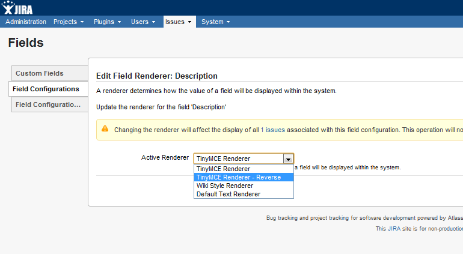
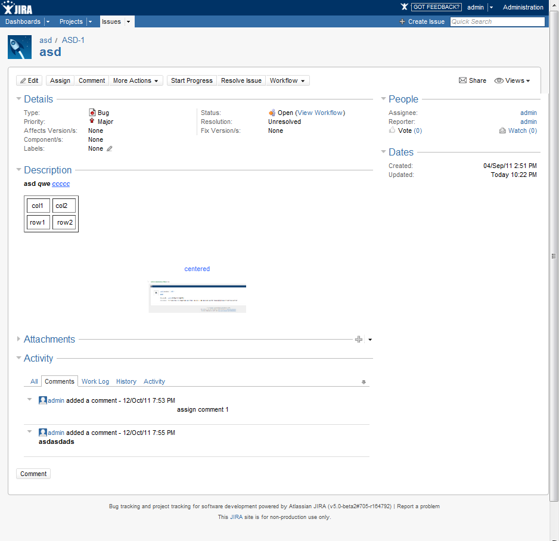
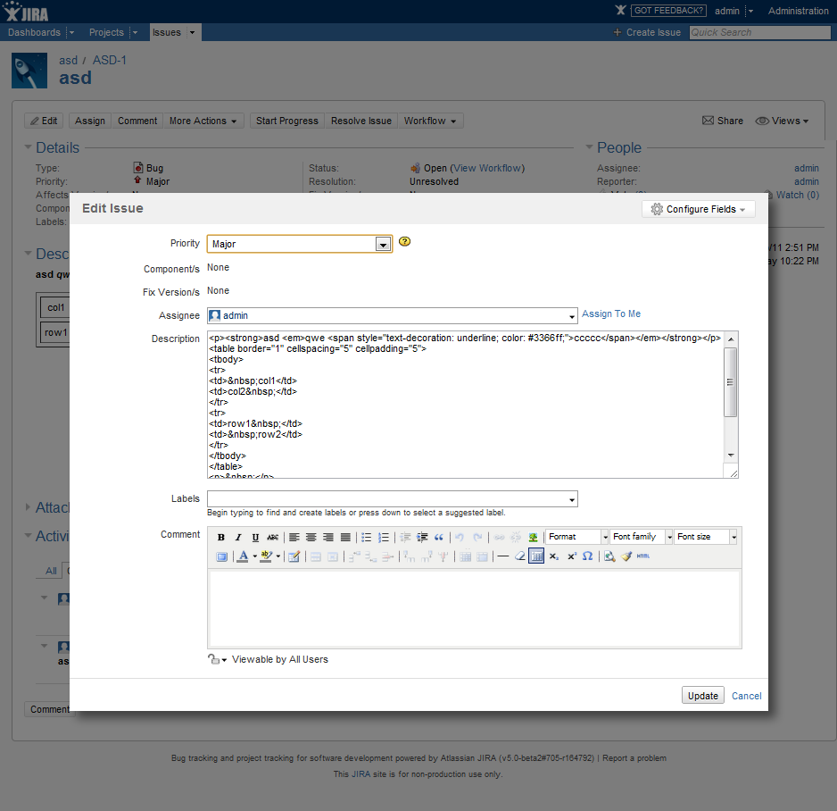
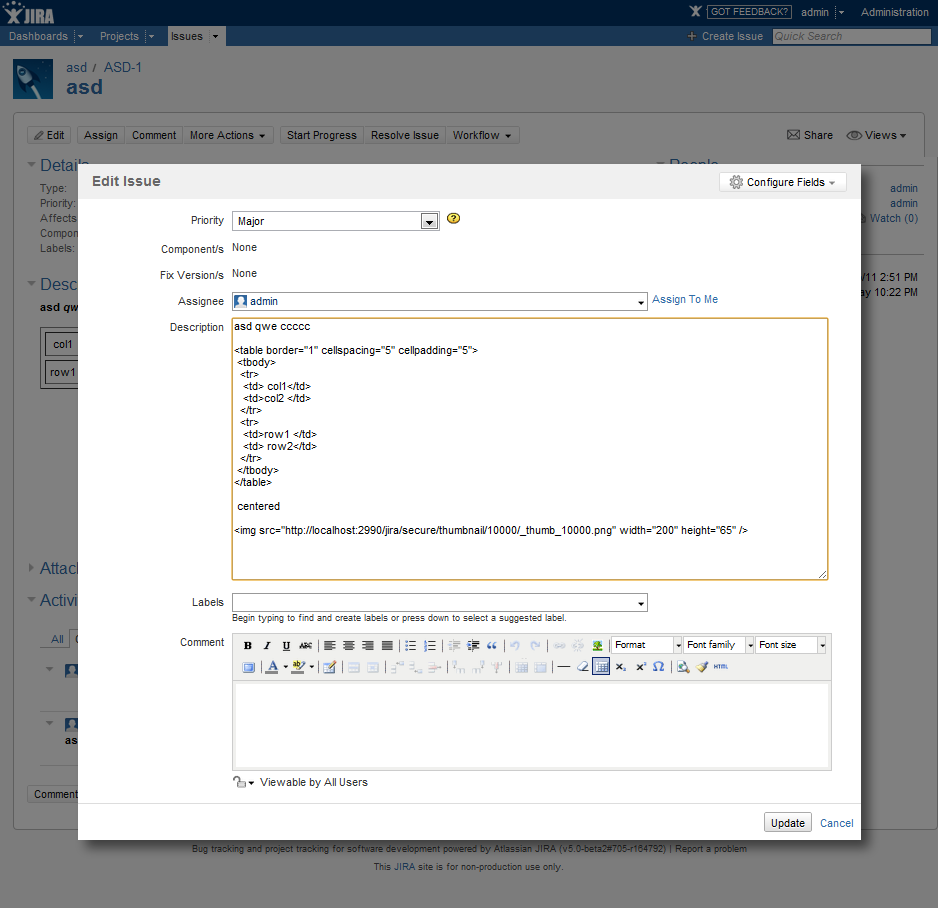
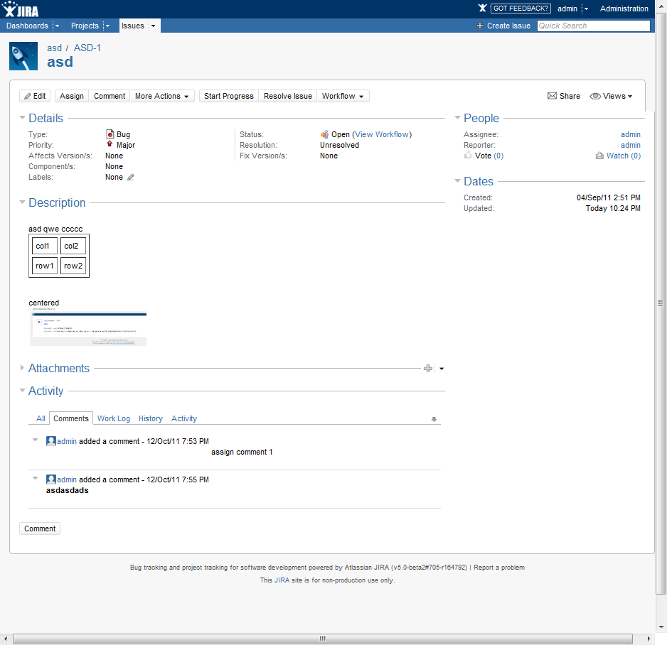
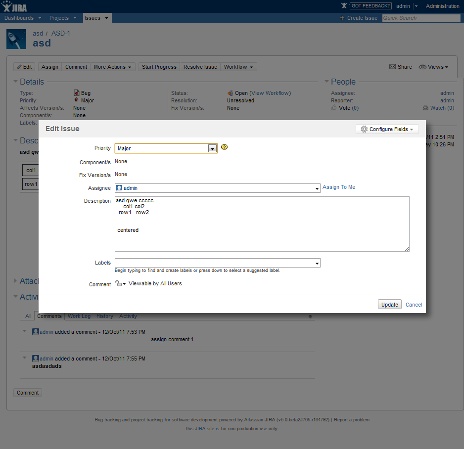
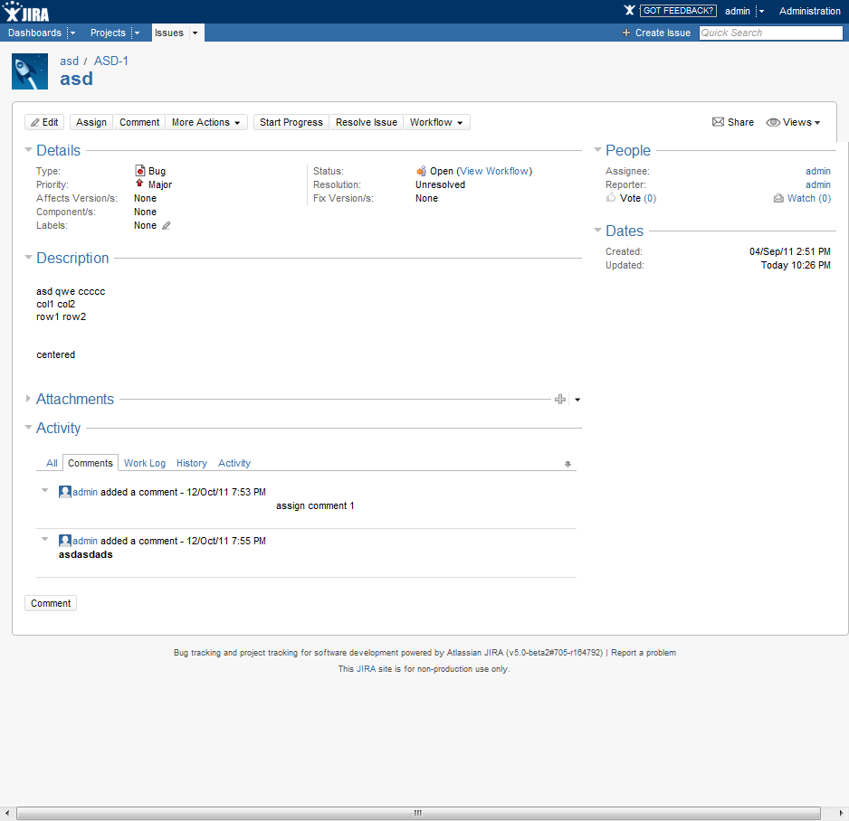

Should you decide after using the plugin that you no longer wish to do so you will find that your fields are stored in HTML. Working with HTML may not be optimal for the users, and so the following describes a means to revert to standard text fields.
Please be aware! Moving from HTML to plain text will remove all formatting from the field and may result in poorly formatted text. If you choose to strip out all HTML tags then some content may be lost, for example removing the img tag will remove all images from the field.
Be 100% sure you know what you are doing if following these suggestions. I cannot be held responsible for any loss or corruption of data. Always perform regular backups and test the plugin in a separate environment fully before deploying to production.
The steps below describe moving to a new renderer which can display existing HTML fields but uses a standard text editor when editing the file. This means that the content of existing issues remains unchanged until the issue is next edited. Three options exist to decide what amount of tags should be removed:
The solution presented here does not change the issues in bulk, nor will it move the issues to Wiki Rendering. It is not planned to create such a process.
At the time of writing this functionality is only available in version 1.5.6, and so only in Jira 4.4 and above. Raise an issue if you require this functionality in an earlier version.
For the field you wish to revert select the "TinyMCE Renderer - Reverse" renderer from the drop down list
From the plugin admin page choose how much of the HTML tags to strip.
The screenshot below shows the rendered description field as edited by TinyMCE. Note the inclusion of a table, image and centered text.
Here is the field being edited. Note all html tags are present, but the TinyMCE editor is not activated. The resulting field is identical to the original.
The following shows the field being edited with the "Some" tags stripped option. Note the table and img tags remain, but the others are removed.
Here is the rendered field. Note the table and image remain intact.
Finally, the following shows the field being edited with the "All" tags stripped option. Note that all tags are completely removed.
Here is the rendered field. Note that the formatting is sub-optimal. Some manual editing will be required to improve the layout.
{kind=link}
{kind=link}
{kind=link}
{kind=link}
{kind=link}
{kind=link}
{kind=link}
{kind=link}